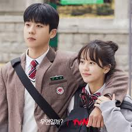

 | Dirangkum dari Pinkvilla, Serendipity's Embrace mengisahkan seorang sutradara produksi animasi yang takut jatuh cinta lagi akibat trauma masa lalunya. Suatu ketika, takdir mempertemukannya dengan cinta pertamanya setelah 10 tahun.
Lee Hong Joo (Kim So Hyun), sang sutradara yang trauma tadi, bertemu dengan Kang Hoo Yeong (Chae Jong Hyeop), seorang perencana keuangan, akibat takdir.
Ia bertemu orang yang pernah dicintainya 10 tahun lalu sekembalinya dari Amerika.
Pertemuan ini membuat keduanya merasakan emosi campur aduk. Bedanya, Hong Joo telah berubah secara signifikan. Kini, ia menganggap cintanya dahulu sebagai sesuatu yang menyedihkan dan kekanak-kanakan.
Hal ini bisa dilihat dalam ucapannya, "Cinta pertama adalah sesuatu yang bisa dimiliki siapa saja, seperti anjing atau sapi,".
Di sisi lain, Hoo-Yeong tampak ingin membangkitkan kenangan cintanya. Ia mengaku, "Aku menyukaimu,". Kalimat ini, biarpun singkat, membangkitkan kenangan keduanya saat masih berusia sembilan belas tahun dan menjalani kehidupan sekolah bersama
(sumber:detik.com) |